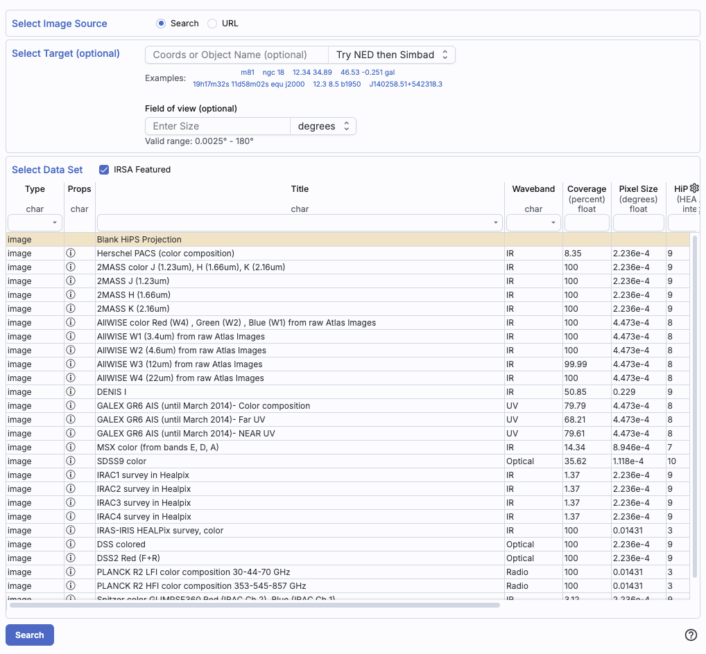
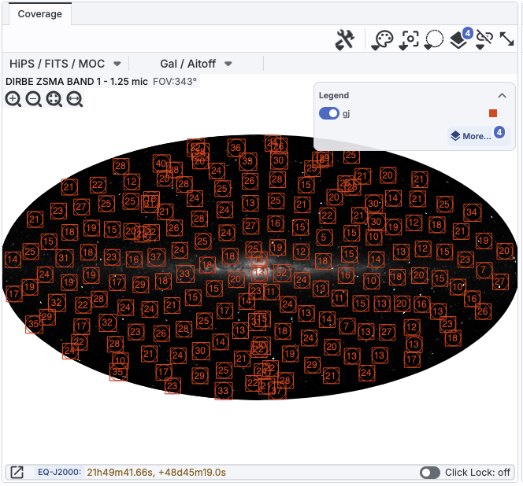
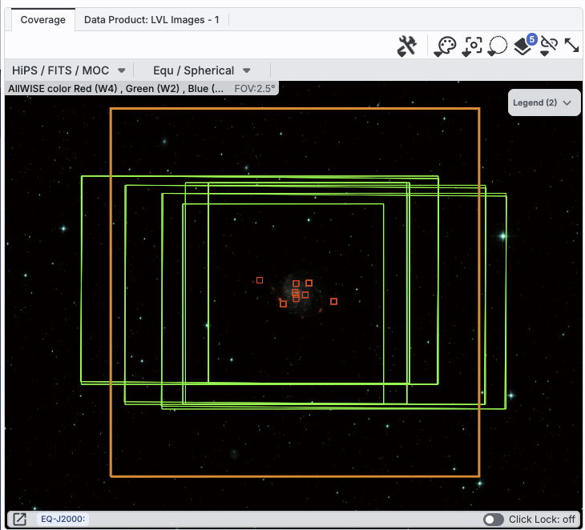
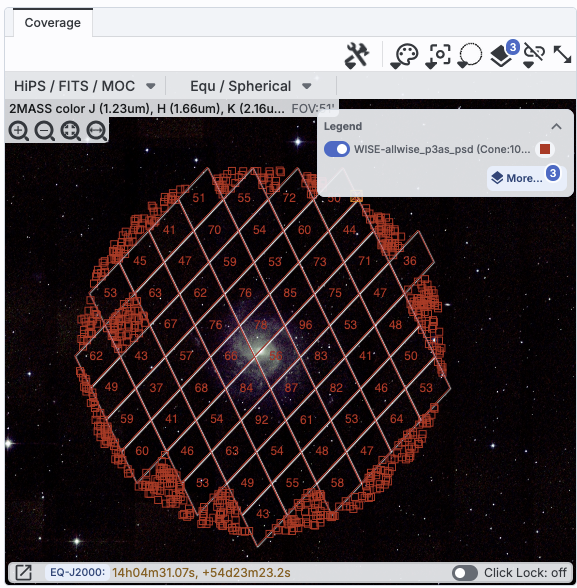
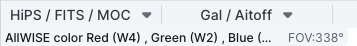
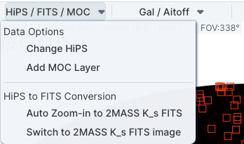
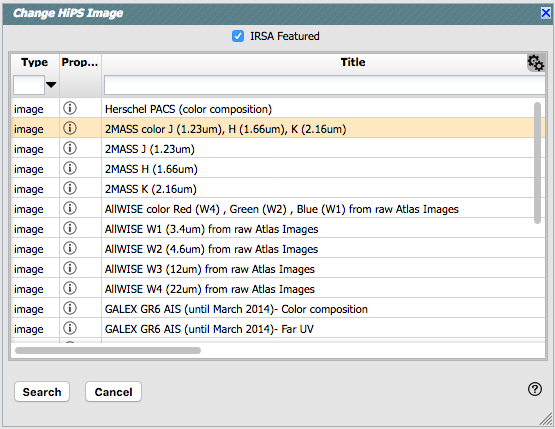
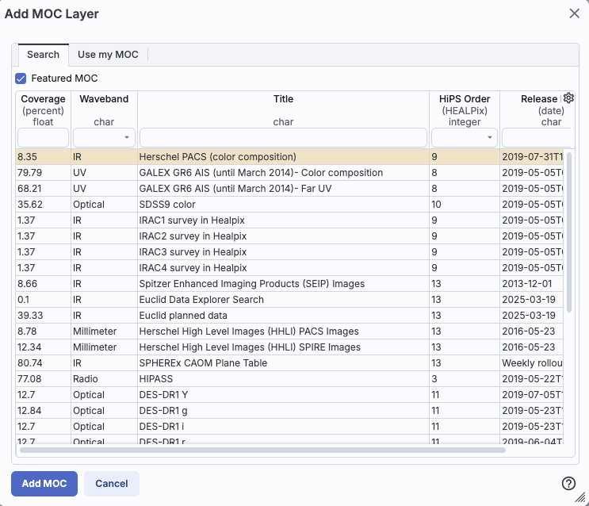
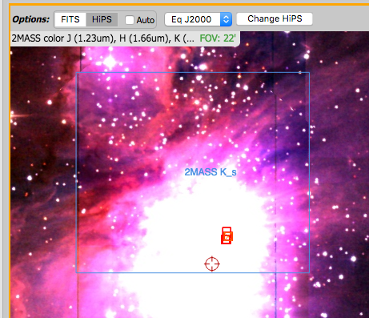
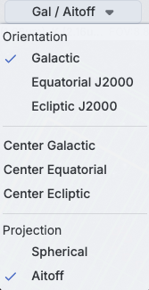

Firefly: Images
Firefly can load images as well as support extensive interaction with
images. This chapter covers the basics of images; visualization tools are covered in
another chapter. Firefly can load images that are FITS  , HiPS , or
ASDF formats. Any catalogs you have loaded are overlaid on the
images; see visualization chapter for
more information.
, HiPS , or
ASDF formats. Any catalogs you have loaded are overlaid on the
images; see visualization chapter for
more information.
Contents of page/chapter:
+FITS Images: General Information
+HiPS Images: General Information
+Searching for HiPS Images
+Coverage Image
+Upper Left HiPS menus
+ASDF files: General Information
FITS Images: General Information & Definitions
Flexible
image transport system, FITS , files are widely used in astronomy and are an easy
way to store images. The venerable FITS format has been around for
decades since the 1970s. It can also be used to store tables, or
multi-dimensional images.
A FITS file has a text header followed by the data. It can have one
or more Header + Data Units (HDUs). The data can be a 1-D spectrum, a
2-D image, or a 3-D (multi-plane) data cube. Additional HDUs are
sometimes called "FITS extensions."
More information on FITS format can be found in any of a number of
places, including
here .
HiPS Images: General Information & Definitions
HiPS
stands for hierarchical progressive surveys, and these kinds of images
are multi-resolution HEALPix
images (where HEALPix stands for Hierarchical Equal Area isoLatitude
Pixelation). (Also see IVOA docs on HiPS .) In practice, what this means is that you can
interact with images of a very large chunk of sky, and as you zoom,
the pixel size changes dynamically. HiPS images are fundamentally
different than FITS images, and as such, what you can do with the HiPS
images are different than what you can do with the FITS images.
The whole point of HiPS images is to provide on-demand resolution
changes. Zoom out, and it loads large pixels. Zoom in, and it loads
smaller pixels. HiPS images are designed to cover large areas of sky
efficiently. If you need to visualize many degrees, this is the image
type to use.
There are HiPS images from all over the world available via the web;
the complete list of HiPS images available from the images search
page includes (once the "IRSA Featured" checkbox is unchecked) many
HiPS images from CDS .
HiPS images typically have the color and stretch set by the person who
originally made them. The color table can be remapped within this
tool. But, you cannot, in general, change the stretch of HiPS images
with as much flexibility as you can with FITS images. This is why
there may be multiple versions of some data sets in the list of HiPS
images.
HiPS maps typically come with a Multi-Order Coverage map
(MOC). A MOC is a
format developed by the International Virtual Observatory Alliance to
specify sky regions. In this context, a MOC tells you via a simple
boolean yes/no, is there sky coverage from this data set in this
region. You can overlay a MOC from one data set onto a completely
different data set's HiPS image.
Things that define a HiPS image. When selecting a
HiPS image, the tool gives you a table. The table that appears has
several columns that summarize important things about the available
HiPS images:
- Type - image (all that is available in this context)
- Properties - links to more information for that image
- Title - descriptive words for the HiPS image
- Waveband - Approximate wavelength range
- Coverage - Approximate sky coverage (100% or less) -- HiPS images
often carry with them something referred to as "MOC", or multi-order
coverage. This number gives an indication of the sky coverage of the
data.
- Pixel scale - At the highest order (zoomed in the most), this is
the pixel size
- HiPS Order - HEALPix tile order; without getting into the guts of
HEALPix, this represents how deep you can zoom
- Frame - coordinate sytem, e.g., equatorial, galactic, etc.
- Dataset IVOA ID - Unique (worldwide) identifier for the dataset
Select "Survey Maps (HiPS)" from the side menu. The
rest of the window changes to look like the following:

- Select Image Source
- First, you tell it whether you want to search among the HiPS
images available to this tool, or give it a URL for it to construct a
search. Either option retains the next section.
- Select Target
- Give it a target; this works just as for
other targets in this tool.
Note that in the context of HiPS images, the field of view (FOV) is
effectively the "initial zoom" for the image upon loading; it can be
no smaller than 0.0025 deg, and can be up to 180 degrees. If you leave
this blank, it will still load the entire HiPS image for you.
- Select Data Set
- Then, select a data set. By default, the list of possible
choices is limited (via the checkbox at the top of the table) to "IRSA
Featured" choices, meaning data that IRSA users are most likely to
want. If you uncheck this box, you will have a much larger list of
HiPS image choices (from CDS ) to
pick from.
Column definitions. The table that appears when
selecting a HiPS image has several columns:
- Type - image (all that is available in this context)
- Properties - links to more information for that image
- Title - descriptive words for the HiPS image
- Waveband - Approximate wavelength range
- Coverage - Approximate sky coverage (100% or less) -- HiPS images
often carry with them something referred to as "MOC", or multi-order
coverage. This number gives an indication of the sky coverage of the
data.
- Pixel scale - At the highest order (zoomed in the most), this is
the pixel size
- HiPS Order - HiPS order, e.g., how deep you can zoom
- Frame - coordinate sytem, e.g., equatorial, galactic, etc.
- Release date - Date that HiPS image became available
- Dataset IVOA ID - Unique (worldwide) identifier for the dataset
- Search!
- To actually initiate the search as specified, choose the "Search"
button in the lower left.
⚠ Tips and Troubleshooting
- The table of HiPS choices is itself a Firefly table, like all the
other tables in this tool, so you can
sort/filter/etc. to locate the image you want to load.
- To learn more about any given image, click on the
 in the second column of the table. Another
window will spawn with basic information about that HiPS image.
in the second column of the table. Another
window will spawn with basic information about that HiPS image.
- Note that color HiPS images are available and that the color
stretch is set by the person making the HiPS image originally (so you
can't really change it). You can change the color table (but not the
stretch); see the Visualization
section.
- A blank HiPS image (basically a blank canvas) is also available
from the list of HiPS images.
If you have launched Firefly by loading anything other than just
images, it will also provide for you a "coverage image", which is
basically a way for it (and you) to keep track of where you are
working on the sky. This may be the most surprising when you are
loading a catalog and therefore don't expect images to appear.
There is a legend that appears in the upper right of the coverage
image, and if there is more than one or two overlays, there is a quick
link to the layers icon; see layers section of the Visualization chapter. You can collapse
the legend to make it smaller by clicking on the arrow in the upper
right of the legend box.
| You may have a coverage image like this -- this is
an example of a coverage image showing two different overlaid
catalogs. Note that in this case, the catalogs cover the whole sky,
so the HiPS image is displayed in HiPS/Aitoff projection to show the
whole sky. The legend in the upper right primarily denotes the
uploaded catalog name. The catalog is shown in a hierarchical display. |  |
| You can also have a coverage image like this,
which shows a coverage image that has polygons demonstrating the
coverage of each a list of loaded images (large polygons) and the
locations of spectra (small squares). This case only has data over a
relatively small region, so the HiPS image is zoomed in comparatively
tightly on the relevant region. The legend is collapsed here, so you
can't read the whole thing. |  |
| You might have a coverage image something like
this, which shows a coverage image with a WISE catalog overlaid. This
has data over a relatively small region, so the HiPS image is zoomed
in comparatively tightly on the relevant region. The catalog is more
than 1000 sources, so the tool has shown you individual sources in the
HEALPix cells where there are fewer sources than a given threshold,
and where there are more sources, it simply shows you the cell and the
total number of sources in that cell -- catalog is shown in a hierarchical display. Because this is a
catalog over a small region (as opposed to the whole sky), you can
control what this threshold is and how it renders the cells from the
layers pop-up. |  |
In all cases, you can interact with the coverage image in pretty much
exactly the same way as you would any other image loaded into this
tool; see the the visualization
chapter for much more about those tools.
The thing that makes a coverage image a little bit different, however,
is that it can automatically adapt, even beyond what a HiPS image can
intrinsically do. The next subsection includes more details about how
it can automatically change to accomodate your needs and zoom level.
⚠ Tips and Troubleshooting:
- The coverage image will show polygons corresponding
to the data products' coverage. However, if there are too many
polygons to manage, the tool may fall back to showing just the
positions of the data products it has retrieved. (Whether that is the
central point or the lower left corner of the image depends on the
data product itself.)
In the upper left of the coverage image, there are two drop-down
menus. The first is covered immediately below; the second is covered
here.

The first drop-down menu looks like this.

There are two sections here, "Data Options" (see immediately below)
and "HiPS to FITS Conversion."
- Under "Data Options", you can change what data are shown.
-
- Change HiPS: Changing HiPS images
- The choices made by any given creator of a HiPS image may result
in any particular region being saturated or too faint to see. Color
stretches are set by the creator of the HiPS map and cannot be
changed; color tables can be somewhat changed by this tool, but that
may be insufficient for your needs. If the HiPS map as shown does not
suit your needs and you wish to change the HiPS image, click on the
"HiPS/MOC" menu, and then click "Change HiPS". It brings up this
pop-up, which resembles the HiPS search
above:

Things to note:
- To select a new image, click on the row corresponding to the new
HiPS image you want, and click "Change HiPS" on the bottom left.
- To cancel without selecting a new image, click "Cancel."
- This is an interactive table, so all the filtering and column manipulation tools apply here
too. You can filter down the columns to find the image you want to
use.
- To learn more about each HiPS map, click on the i with the circle
in the second column. It will spawn another window with standardized
information about the HiPS map.
- By default, it shows HiPS maps corresponding to IRSA data
collections. To see a more comprehensive list, unclick the box marked
"IRSA Featured."
- Add MOC Layer: Adding a MOC Overlay
- It is often useful to see what other data are available. Looking
at a Herschel/PACS far-IR HiPS map? Overlay a MOC from a different
survey to see what complementary data might be available to go with
your IR data. Click on the "HiPS/MOC" menu, and then click "Add MOC
Layer." It brings up this pop-up:

Things to note:
- Coverage (the first column) is the fraction of the sky covered by
that MOC.
- To select a new MOC, click on the row corresponding to the new
MOC you want, and click "Add MOC" on the bottom left.
- To cancel without selecting a new image, click "Cancel."
- This is an interactive table, so all the filtering and column manipulation tools apply here
too. You can filter down the columns to find the image you want to
use.
- By default, it shows MOCs likely to be most interesting for IRSA
users. To see a more comprehensive list, unclick the box at the
top left.
- If you have your own MOC FITS file, you may upload it via the
"Use my MOC" tab on the top center.
- If you try to upload a MOC FITS file via the upload tab, it will behave as if you have
uploaded it here.
- Under "HiPS to FITS Conversion", you can control whether the viewer
will automatically toggle between image types as needed.
- By default,
the coverage image is most likely a HiPS image. FITS images are best
for small regions of the sky, and HiPS images are best for large
regions of sky.
- Auto Zoom-in to 2MASS K_s FITS:
- If you select this, then when you
zoom in very close to a target, it will automatically convert to a
FITS image when you get close enough.
- Switch to 2MASS K_s FITS image:
- If you select this, then it will
jump directly to a FITS image centered on the currently selected
target.
Note that if you swap between HiPS and FITS and back again, it
will include a region on the HiPS image that is the footprint of the
FITS images you had just loaded. A label appears at the center of that
footprint, which may be disconcerting if you are not zoomed out enough
to see the region itself. Here is an example, zoomed out so it is
more clear what is going on:

The second drop-down menu looks like this.
|

|
There are three sections in this menu.
- Orientation
- Under "Orientation", you can control whether the coordinates are
in Galactic, Equatorial J2000 (RA/Dec), or Ecliptic J2000. This
basically is a quick way to orient which way is up on your screen.
Note that this can be
used in conjunction with the image readout
and/or the coordinate overlay layers button.
- Center Galactic
- If you select "Center Galactic", the HiPS image slews (or maybe
twists is a better word) to put Galactic North up, the Galactic Center
in the center of the field of view, and the Galactic Plane
horizontally across your field of view. This is useful if you have
been zooming or scrolling around to look at individual sources and
need to bring it back to a familiar orientation quickly. "Center
Equatorial" does the same thing for the celestial poles, equator, and
ra/dec=0 (those defined by RA/Dec). "Center Ecliptic" does the same
thing, but for the ecliptic plane, poles, and coordinate 0,0. This
feature can be most useful when comparing sky coverage (MOCs) to those
from other missions or surveys that 'work' in alternate coordinate
systems. If you are looking at a coverage map, and you've clicked this
menu choice when you were zoomed in closely on a target that isn't 0,0
in your coordinate system, to "find" your position, click on a row in
whatever table you have loaded on the left to bring your target back
into view.
- Projection
- Under "Projection", you can control whether the display is in
Spherical or Aitoff coordinates. Aitoff projection works better for
all-sky displays.
|
ASDF Images: General Information & Definitions
Advanced Scientific
Data Format (ASDF) is a new
format for text and binary data. It is designed to deal with more
structured and complext metadata than FITS format can handle, as well
as large and complex binary data. Some upcoming NASA missions will
use ASDF format.
More information on ASDF format can be found in any of a number of
places, including
here .
To load ASDF files into Firefly, you need to use the Upload tab.